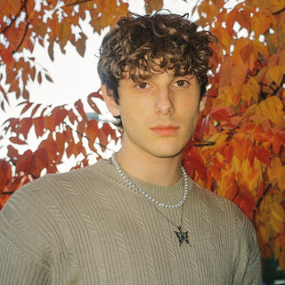
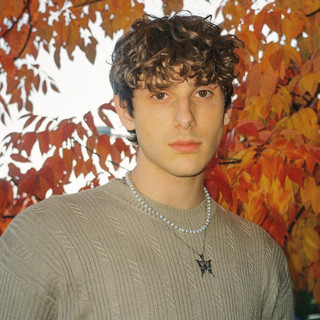
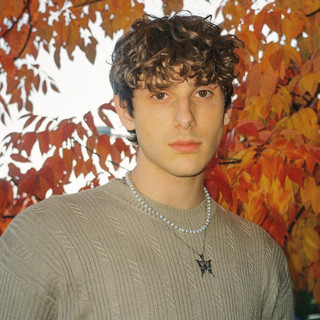

Top 4 Favorite Song
 

- This is What Space Feels Like By Jvke
- After Hour By TheWeeknd
- This Is What Heartbreak Feels Like By Jvke
- Less Than Zero By TheWeeknd
I was born at Selayang Hospital, Selangor at 11:07 am.
I feel very grateful that I am surrounded by very good friends.
when I was in kindergarten, I attended Yakin Dan Maju Kindergarten, which is a Chinese school.
and in primary school I attended SJKC Kepong 1, which is also a Chinese school.
and in secondary school, I attended a day school and it was called SMK Menjalara and it was a Malay school.
and already entered the university, I was sent to UiTM Negeri Sembilan Branch Rembau campus.
| Name: | Palija |
|---|---|
| Age: | 20 |
| Email: | farizasyzawaliana@gmail.com |
| Gender: | Women |
| Race: | Malay |
| State: | Kuala Lumpur |
| Hobby: | Build lego |
